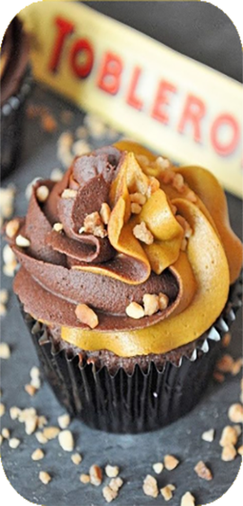

TOBLERONE CUPCAKE

A great recipe of Toblerone cupcakes with unique taste that you will want to make every time you bake! Do not forget to share with your friends and family ;)
Ingredients:
Cakes
220g Butter
220g Sugar
4 Medium eggs
150g Self raising flour
50g Coco powder
A whole normal Toblerone bar
Topping
250g Butter
250g Icing sugar
Pinch of salt
2 Teaspoons vanilla essence
2 Heaped tablespoons cream cheese
Toblerone
Process:
Heat the oven to 180C Cream together the butter and sugar until light and fluffy.One by one stir in the eggs, then fold in the flour and coco powder. Cut up about 3 - 5 pieces of toblerone and cut them up and stir them into the mixture so they melt in the oven. When you put the mixture into the cases make sure each one has some toblerone in. Place mixture into cupcake cases and bake for 10 - 15 minutes.
Allow the cakes to cool on a coolingrack for about 15 minutes. When they are completely cool start making the topping.
Beat the butter so it is light and fluffy and easy to use. Add the icing sugar, pinch of salt and vanilla essence with an electric whisk until well blended. Lastly add your cream cheese 1 tablespoon at a time and mix slowly. use a piping bag to put the topping on to make it look better or an icing set. Finally when the icing is on the cakes grate the rest of the toblerone and sprinkle on the top. enjoy!